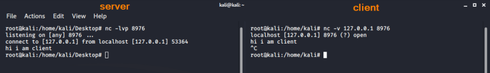
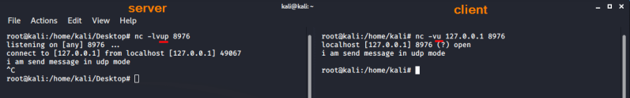
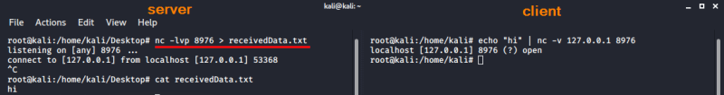
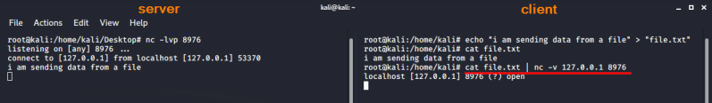
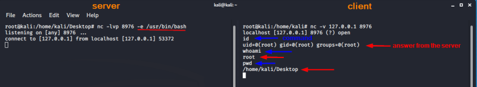

simulate connection client-server
OPTIONS:
-l → listen mode, for inbound connects
-v → verbose
-p <port> → local port number/s
-u → UDP mode
-e <filename> → specify filename to exec after connect
• TCP• UDP
• output redirection: save received data to a file • output redirection: send data from a file •
Bind Shell: remote execution of commands 